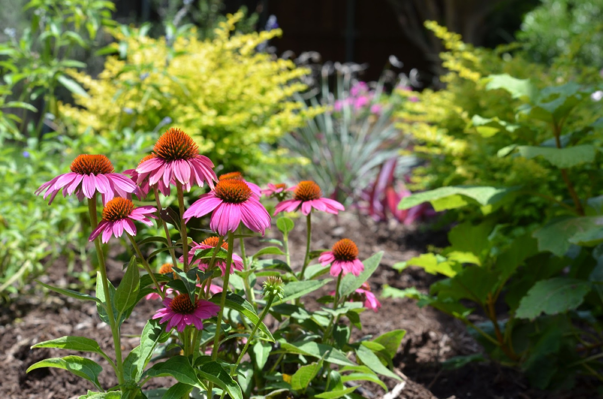
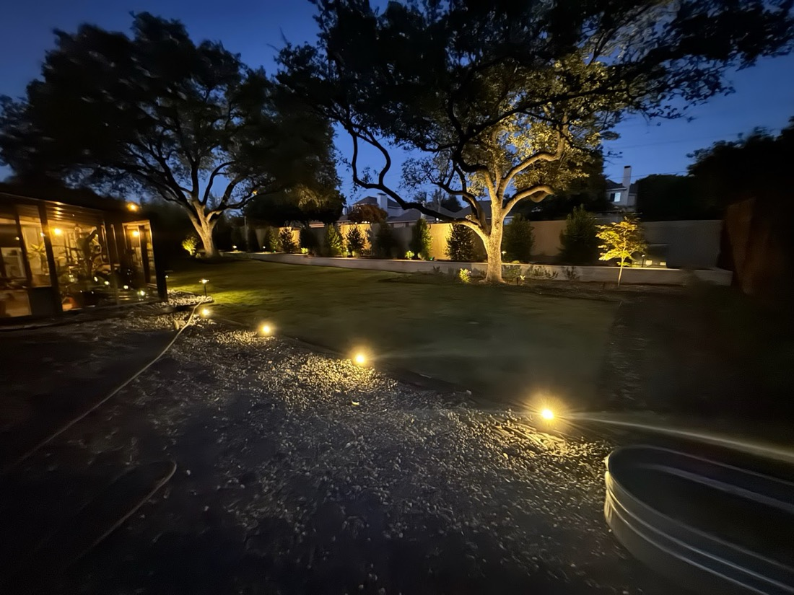

Custom landscape design, retaining walls and stonework for homes and HOA communities across Allen and Collin County.

Hawkins Landscape & Outdoors plans the whole project before the first shovel — a real design that fits your home, your yard, and, when it’s needed, your HOA’s approval committee.
From retaining walls and stonework to plantings, beds and ongoing lawn maintenance, it’s one crew that understands the vision and executes it cleanly.
Request a consultationThe design, hardscape and upkeep that turn a yard into a finished outdoor space.
A drawn plan tailored to your home and site — including designs prepared for HOA architectural-review approval.
Stone retaining walls that hold grade and last — including rebuilds of failing wood or block sections.
Flower-bed stonework, mortar work and stone borders that sharpen and structure the whole yard.
Plantings, bed installation and ongoing landscape and lawn maintenance to keep it looking its best.
Real Hawkins projects — designed beds, plantings, stonework and finished landscapes across Collin County.
“Bill Hawkins and staff were easy to work with. He drew up a plan to satisfy the ARC at our community which was immediately approved. Bill came with his workers and completed the job in fewer than 5 hours.”
“Hawkins replaced a sagging wooden section of retaining wall with stone to match the rest of the wall, and also did some mortar patching on our flower bed stonework. They did SUCH a good job, great communication and attention to detail.”
“My wife and I were thoroughly impressed with the work that Hawkins did for us as Blake and his team went above and beyond with our project! They were very communicative from start to finish and provided top notch service.”
Free consultations on design, retaining walls and stonework across Allen & Collin County.
{kind=link}
{kind=link}
{kind=link}
{kind=link}
{kind=link}
{kind=link}